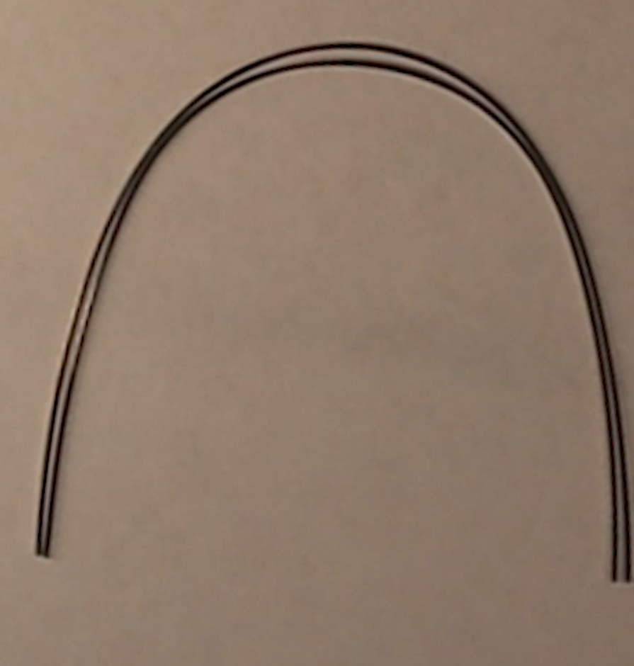
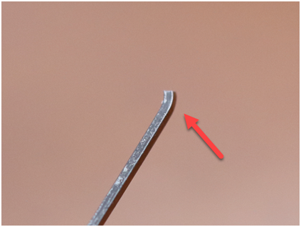
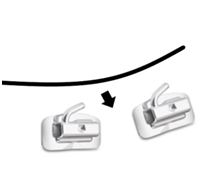
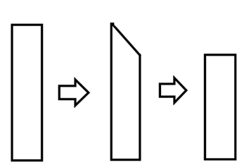
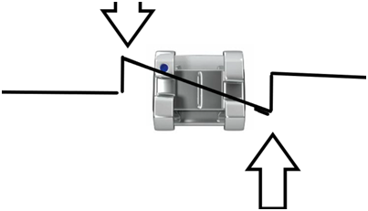
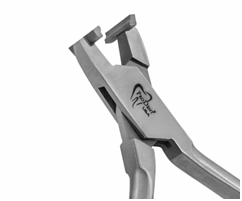
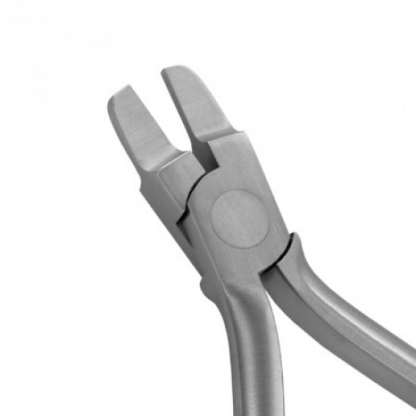
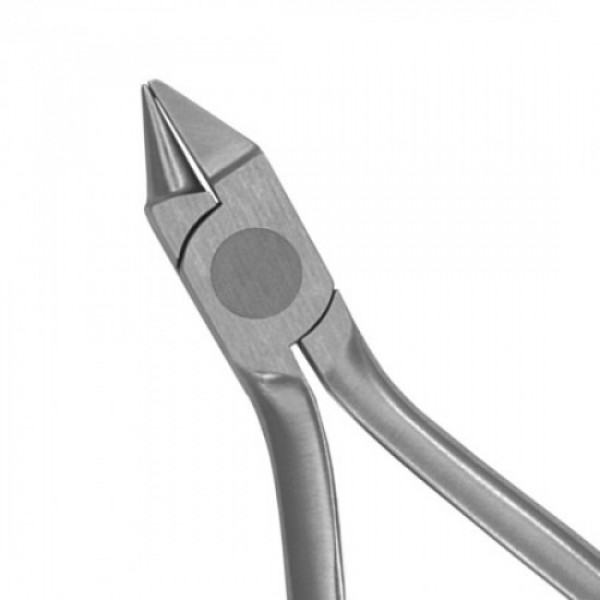
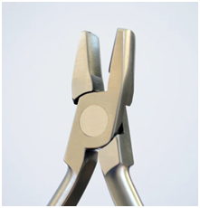

Getting them out, getting them in, cutting them safely, and bending them accurately.
Lesson 3 covered the mechanics of ties, chain, and the fulcrum. This lesson is about the archwire itself: the problems you will hit removing and seating it, how to cut it without breaking a molar tube, and the three bending skills that separate a competent tech from one the doctor has to check behind.
The doctor decides what bend goes where. You are learning to place it accurately, check it properly, and recognize when something is off. Recognizing a problem and reporting it is the skill. Deciding to fix it on your own is not.
| Section | What it covers |
|---|---|
| 1 · Archwire coordination | Comparing upper and lower wires, midlines first, the 1 mm rule, arch-form patterns, re-forming, and the twelve-point routine. |
| 2 · Step-down bends | 2–2 versus 3–3, which wires, the step plier and the bird beak, the five-point quality check, and the chairside decision box. |
| 3 · Marking the wire | Wax pencil technique, marking both sides intraorally, and the seven-step marking sequence. |
| Tips on wires | Cinched wires and how to remove them, three techniques for seating a difficult wire, and cutting distal ends safely. |
| Instruments | Step plier, Tweed, bird beak, arch forming, and which one introduces the most unwanted torque. |
Archwire coordination means shaping the upper and lower archwires so they are compatible with each other and with the patient's intended arch form. The goal is not simply to make both wires look smooth. It is to make sure the two arches are shaped to fit together correctly when the patient bites.
If the wires are not coordinated, the teeth may be guided into arch forms that do not fit together. That affects buccal relationships, posterior intercuspation, overbite, overjet, crossbite, midlines, and final detailing of the occlusion.
Coordination becomes increasingly important at rectangular stainless steel: .016 × .022 SS, .018 SS, .018 × .025 SS, .019 × .025 SS. The heavier the wire, the more strongly it influences the final arch form. The habit to build: heavy stainless steel means check the arch form.
Make sure they are not distorted by ligatures, chain, or debris. Lay them flat on a clean tray sheet.
Lay it flat, not twisted. It should sit naturally without one posterior segment lifting off the tray.
The lower should sit approximately centered within the upper arch.
Critical. If the midlines are not aligned, the comparison is inaccurate. Midline first. Width second.

Once the midlines are aligned, the upper wire should follow the same basic shape as the lower while sitting approximately 1 mm outside it. Think of the two as parallel tracks: upper is the outside track, lower is the inside track. The spacing should look relatively even from anterior to posterior. It does not need to be mathematically perfect at every point, but the relationship should be smooth and intentional.
| What you see | What it means |
|---|---|
| Correct | Upper follows the same arch shape, is slightly wider, sits about 1 mm outside, keeps a similar shape anterior and posterior, and has coordinated right and left sides. |
| Wires overlap | The upper may be too narrow relative to the lower in that region. This does not automatically mean expand the upper. Stop and evaluate the arch forms. |
| Upper much wider | Substantially more than about 1 mm outside suggests the upper may be overexpanded. Do not automatically narrow it. First determine whether the expansion is intentional. |
Coordination is not simply "make the upper 1 mm wider." The shapes must match. If the lower arch is ovoid, the upper should be coordinated to an ovoid shape. You do not want an ovoid lower with a square upper even if the posterior widths measure correctly. The curves should correspond.
Begin learning to recognize the broad arch-form patterns: ovoid, tapered, broader or more square, and asymmetric. The goal is not to independently diagnose which arch form a patient should have. The goal is to recognize when the two wires clearly do not match.
Common instruments: bird beak, De La Rosa, arch-forming pliers, and Tweed for certain corrections. For general arch-form adjustments, De La Rosa or arch-forming pliers are particularly useful because they allow broader, smoother changes rather than sharp localized bends.
Do not create one large bend. Work gradually along the posterior segment, make several small adjustments, compare right and left frequently, place the wires back together, recheck midlines, and reevaluate the whole arch form. The goal is a smooth coordinated curve, not a wire with several visible kinks.
A .019 × .025 SS wire has far more ability to influence tooth position and arch form than a flexible NiTi wire, which means errors matter more. A significantly overexpanded heavy upper wire will gradually pull the teeth with it. Too narrow, and it influences the posterior teeth inward. The heavier the wire, the more carefully we check coordination.
Sometimes we intentionally want upper expansion: a constricted upper arch, posterior relationships needing width, or a prescribed transverse correction, particularly in .019 × .025 SS. Even when expansion is desired it should still be smooth, symmetrical, coordinated with the lower, and consistent with the treatment goal.
Coordination can influence the anterior bite. If the upper arch is excessively expanded, the upper anterior teeth may end up positioned in a way that reduces normal overbite. Excessive transverse or arch-form discrepancy can contribute to reduced overbite, an edge-to-edge anterior relationship, an anterior crossbite tendency, and poor posterior fit.
So when evaluating a patient with an unexpected bite change, do not only look at the anterior teeth. Also ask: are the upper and lower arch forms coordinated?
You can create beautiful step-downs and still distort the overall lower arch form while bending. After step-downs are complete: check the step-downs, check torque, check that posterior segments are parallel, then coordinate the upper and lower archwires. Arch-form coordination is part of the final quality-control check.
A common error is adjusting one side more than the other. After shaping, hold the wire by the anterior portion and compare the posterior segments. Does the right flare farther than the left? Does one curve more sharply? Are the molar areas approximately symmetrical? Is one side rotated vertically? Unless the doctor intentionally wants an asymmetric wire, both sides should be coordinated.
Use the same sequence every time:
Do not assume the first adjustment is enough.
Makes one side look too wide and the other too narrow.
FixAlways align midlines first.
Premolars may coordinate while the anterior shapes are completely different.
FixEvaluate the entire arch.
The upper generally needs to sit slightly outside the lower.
FixMaintain the appropriate upper-lower relationship.
Produces an irregular arch form.
FixMake broad, gradual adjustments.
A square upper over an ovoid lower is not coordinated.
FixMatch the overall arch-form pattern.
Heavy stainless steel transmits that expansion to the teeth.
FixRecheck against the lower wire frequently.
Your trainer will give you several pairs of stainless-steel wires: properly coordinated, upper too narrow, upper too wide, ovoid lower with square upper, right side overexpanded, and midlines intentionally offset. For each pair: align the midlines, identify the problem, explain why they are not coordinated, select the appropriate plier, re-form the wire, recheck the coordination, and present the finished wire.
The upper archwire should generally follow the lower approximately 1 mm to the outside. The heavier the stainless-steel wire, the more important accurate coordination becomes, because the wire has greater influence on the final arch form and occlusion.
Step-down bends are a finishing and bite-opening technique used in the lower arch, especially when correcting a deep overbite and a pronounced Curve of Spee. The goal is a controlled vertical change in the wire so the lower anterior teeth are intruded while the premolars are allowed to extrude. Together those movements flatten the Curve of Spee and open the bite.
We commonly place step-downs once we reach a rectangular stainless-steel wire, most often .018 × .025 SS and .019 × .025 SS, and sometimes .016 × .022 SS when we are still closing anterior spaces.
| Location | Where the bends sit | Effect |
|---|---|---|
| Lower 3–3 | Distal to the lower canines | The entire anterior segment, canine to canine, steps downward. |
| Lower 2–2 | Distal to the lower lateral incisors | Centrals and laterals step down; canines remain with the posterior segment. |
The doctor determines whether the patient needs 3–3 or 2–2 based on the bite and the desired movement.
To open a deep bite by flattening the lower Curve of Spee. The mechanics create intrusion of the lower anterior teeth, relative extrusion of the premolars, flattening of the Curve of Spee, and reduction of excessive overbite.
Step-downs work when the archwire is stiff enough to transmit the bend to the teeth. A flexible NiTi wire springs back and will not hold a precise step bend. Stainless steel holds the bend, gives greater vertical control, gives better control of the Curve of Spee, and lets us coordinate torque and arch form at the same time.
In general, the thicker and stiffer the wire, the more effectively it can influence the Curve of Spee. That does not mean we automatically use the thickest wire. Size and timing follow the stage of treatment.
| Factor | Detail |
|---|---|
| 1. Wire thickness | A thicker rectangular SS wire is stiffer and more likely to maintain the bend. Common: .016 × .022, .018 × .025, .019 × .025 SS. |
| 2. Wire type | Stainless steel holds bends far more predictably than NiTi. |
| 3. Deeper bends | A bigger step increases vertical activation. Deeper is not automatically better — follow the treatment plan. |
| 4. Engage the 7s | A longer posterior anchor segment can make flattening the Curve of Spee more effective. Always confirm the doctor wants the 7s engaged. |
| 5. Reverse curve | A reverse Curve of Spee can increase bite-opening mechanics. More advanced; only when prescribed. |
The step-down plier is usually the best starting instrument. It creates a more controlled vertical step without introducing as much unwanted torque into the posterior wire.
The goal is two clean, symmetrical vertical steps.
A bird beak can also create or deepen step bends, but it easily introduces unwanted torque into the posterior wire, because depending on how the plier is held you may twist the rectangular wire while bending it vertically.
Think about torque. After making the bend, inspect the posterior portion. If torque has been introduced, use the Weingart and bird beak to carefully remove the twist.
The Tweed plier has flat surfaces and tends to introduce less unwanted torque. It is useful for refining the step, making it larger, flattening an uneven bend, correcting torque, and making right and left more symmetrical. For larger step-downs, start with the step-down plier and refine with the Tweed.
Creating the step is only half the procedure. Every step-down wire must be checked before it goes in the mouth.
Are the right and left step-downs symmetrical?
Do the bends actually step down, or did the bend become a distal tip?
Are the right and left posterior segments parallel to one another?
Did you accidentally twist either posterior segment? Ask: did I make a vertical bend, or a vertical bend plus a twist?
Is the lower archwire still properly coordinated with the upper?
Only after these checks is the wire ready for placement.
If the vertical bend is not close to perpendicular to the archwire, it becomes more of a distal tip than a true step-down. Instead of an angled /, you want a controlled vertical _|. The shape will not be perfectly square, but the movement should clearly be vertical rather than simply angling the posterior portion distally. Look at the wire from the side and ask: does this actually step down?
The lower anterior portion of the wire has been stepped vertically relative to the posterior segments. As the wire attempts to return toward its original shape, it produces forces that help intrude the lower incisors and extrude the premolar region. Over time this flattens the lower Curve of Spee and decreases the deep overbite. The change is not instant. Bite opening occurs progressively over multiple appointments.
Sometimes we introduce step-downs in a .016 × .022 SS wire while anterior spaces are still closing. The wire may then be maintaining or closing anterior spaces, controlling anterior tooth position, beginning bite opening, and controlling the Curve of Spee all at once. Because several mechanics are running simultaneously, it is especially important not to make additional bends or changes that were not prescribed.
This creates asymmetric forces.
FixCompare both sides before placing the wire.
The bend was created at an angle instead of vertically.
FixRe-establish a more perpendicular step.
Commonly happens when using the bird beak.
FixLook directly down the posterior segment and remove the twist with the appropriate pliers.
One side may be rotated or bent differently.
FixCompare both sides and coordinate before insertion.
Too much manipulation changes the shape of the whole wire.
FixRe-coordinate with the bird beak, De La Rosa, or arch-forming pliers.
A 2–2 step and a 3–3 step produce different mechanics.
FixConfirm the prescribed location before bending.
Once the patient reaches the heavier rectangular stainless-steel portion of the sequence, especially .018 × .025 SS and .019 × .025 SS, the technician should automatically check the overbite.
If the patient is in .018 × .025 SS or .019 × .025 SS and the upper incisors overlap the lower anterior brackets when they bite down, plan on step-down bends to continue opening the bite. This should become an automatic check during the adjustment. You should not need to wait for the doctor to notice it first.
When you see a heavy rectangular SS wire plus upper incisors covering the lower brackets, think: the bite is still deep, we need more bite opening. Then evaluate the lower wire for existing 2–2 or 3–3 step-downs, whether the bends are deep enough, whether the 7s are engaged, whether there is reverse curve, whether the wire is fully engaged, and whether the lower archwire is coordinated.
If the patient bites down and the upper incisors no longer overlap the lower brackets significantly, the brackets are clearly visible, and the overbite has opened appropriately, then additional step-downs may not be necessary. Recognize that the bite-opening goal may already be close to where we want it.
A technically good step-down is not simply a bend in a wire. It is a controlled, symmetrical vertical activation in a rectangular stainless-steel archwire designed to manage the lower Curve of Spee while maintaining proper torque and arch form.
Before placing step-downs, detailing bends, or other planned bends into a stainless-steel archwire, the wire should first be marked accurately with a wax pencil. This gives a clear visual reference for where the bend goes and helps prevent asymmetry between right and left.
Marking before bending helps you place bends in the correct location, keep right and left symmetrical, avoid guessing once the wire is out of the mouth, reduce unnecessary rebending, prevent bends being placed too mesial or too distal, and make step-downs, step-ups, and detailing bends reproducible. A small marking step makes the final wire much more accurate.
Confirm the wire is centered, the midline is correct, and the wire is fully engaged in the brackets being used for reference. If it is not fully engaged, the marks will not represent the desired bend location.
Lower 3–3 step-down marks just distal to the lower canines. Lower 2–2 marks just distal to the lower lateral incisors. For other detailing bends, the doctor indicates the tooth or interproximal area.
Easy to see, narrow enough to identify the exact location, and placed consistently on both sides. Do not make a broad mark that leaves you unsure where the bend should go.
Mark right, mark left, then remove the wire. Once it is out, estimating the corresponding location is surprisingly difficult.
Lay the wire on the tray sheet. Are the marks in corresponding locations? Equally distant from the midline? Did one side end up more mesial or distal? If uneven, recheck before bending.
The mark is your reference point. Position the plier precisely on it and do not let it drift while you position.
Identical marks do not guarantee identical bends. Compare bend location, depth, angle, symmetry, posterior torque, and overall arch form.
The mark controls where the bend is placed. Your hand skills still control how the bend is made.
The same concept applies to an individual tooth bend. Instead of trying to remember "I think the bend was somewhere around the premolar," mark the exact location while the wire is still in the mouth. The wax mark may indicate a step-up, a step-down, an inset, an offset, a toe-in or toe-out, or another prescribed detailing bend. The doctor determines the intended correction. The wax mark helps you reproduce it in the correct location.
You lose the patient's teeth as your reference.
FixWhenever practical, mark intraorally first.
A wide mark makes the bend location unclear.
FixUse a narrow, distinct line.
Bilateral bends need both references.
FixMark both sides before removing the wire.
The plier drifted off the reference point.
FixCheck the exact plier position before applying force.
A wax pencil is a simple tool, but it gives a reliable connection between what you see in the patient's mouth and where you place the bend once the wire is out. Accurate marking is one of the easiest ways to make wire bending consistent and predictable.
Everything above is about shaping the wire. The rest of this lesson is about handling it: the problems you will hit removing a wire, seating a difficult one, and cutting it without breaking a molar tube.

Remove the wire from the contralateral side first. Using the Weingart, hold the wire between the 6 and 7. Watch for bends between the 5 and 6, and make sure the anterior part of the wire is loose from the slot. Use the patient's arch as a stabilizer, holding the Weingart with the tip of the instrument toward your pinky, and inch the wire out.
Locate the cinch by sliding the wire so the end sticks out distal to the terminal tooth. Once located, use a high speed to remove the cinch, then try to inch the wire out again.
If the wire is too short after removal, it may need to be replaced with a new wire.
Both causes are avoidable. Cut parallel and keep your cutters sharp, and you will spend far less time inching wires out of tubes. Section 3 covers the technique.
Sometimes the 7s are not completely aligned, or a 7 came off and was replaced slightly out of position. We may not be able to fall back to NiTi without negating most or all of the progress from the bends already in the wire.
One structural fix first: reposition the 6 with a converted buccal tube. Beyond that, use the techniques below, and combine them if needed.
Make sure you know where the bend is. If we are following the wire sequence, we should be able to get the next wire in with some effort. At the next appointment, this curve may be straightened out a little more.

Using the distal end cutter, cut a sharp end. This lets the wire pass through the tube more easily. After getting the wire through the slot, trim or flush cut so there is no sharp end left.
Make sure you do not shorten the wire so much that it no longer goes all the way through the tube. You may need to bring the midline slightly toward the side of focus.

Sometimes tip bends are made on anterior teeth. These can be difficult to get into the slot just by pushing. Use the mirror or direct vision to work out how to get the wire parallel to the slot so it slides in. You may need to use opposite forces on each side of the bend to seat it.

A broken molar tube is a rebond, extra chair time, and a frustrated patient. Almost every one of them comes from how the wire was cut.
The instruments we have for wire bending. Learn them by silhouette, and learn which one introduces the least unwanted torque.




The De La Rosa plier is also used for arch-form work, alongside the arch-forming plier, when broader smoother changes are needed.
The step-down quality-control sequence is the item to be honest about. Bend a wire, then hand it to your trainer and let them run all five checks before you say whether you already did. Finding your own errors before someone else does is the whole point of the routine.